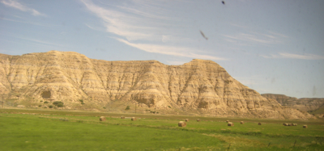

Monday the 29th (Day 3) was all about finding things to do as we cruised through Western North Dakota and Eastern Montana. We woke up with the sunrise:
Caroline, the 6-yr. old, and John, the 40+ yr. old, were fighting it out for who could be more bored. Train travel with a soon-to-be-first-grader is tough. But we brought along a lot of surprises for Caroline, such as a magnetic knock-off of Battleship called SeaBattle:
I should say that Caroline was quite content to read at long stretches from her books about Fairies, which we doled out slowly.
I finished on my Kindle the novel One Second After ( Amazon), which is about the impact of an EMP (electromagnetic pulse) on everyday life in North America and a small town in North Carolina in particular. Besides being a pretty ripping yarn, the novel is plausible agit-prop for the notion that the federal government should harden many more resources against the effects of EMP. After reading the book, I read up a bit on EMP, and if you're concerned about, oh, the end of life as we know it, I would recommend that you read it. (It's better than the TV series "Jericho," but not as good a novel as World Made by Hand ( Amazon).)
In the mid-morning, our sleeping car attendant told us that there would be a wine-tasting at 3 PM. Now that sounded fun. However, there were to be no kids! So I did the one on this leg, with the expectation that Julie would do the tasting on the way back. It was a lot of fun. Here's a pic of one of the dining car managers reading about the wine:
The wine wasn't bad. All bottles in the $10 to $15 range; probably the best was a 2006 cab from Castle Rock. During the tasting, there were some trivia questions: I answered enough of them to win a bottle of the Castle Rock, which Julie and I saved for a later meal.
The train rolled into East Glacier at around 6:45 PM. The approach to Glacier became somewhat more lively, but was, for the most part, more of the flat prairies of the eastern part of Montana and North Dakota, along with some badlands-style mesas:

And more grain elevators . . .
But there was one big change: Mountains! I'll be posting some pics in the next post.
We walked with our luggage from the train station right across Highway 49, and into the Lodge. The Lodge is reminiscent of the other big National Park lodges, such as the one at the North Rim of the Grand Canyon, but supported with gigantic logs, i.e., tree trunks, with what seemed to be their original bark. In the hotel is a nice restaurant, a lounge, a gift shop. We got our keys and visited our room, which was spare but big. Once in our room, Julie ran back across the highway to get our rental car. We were on the second floor right behind the front desk, with our own door onto a porch above the front entrance. We found it very quiet -- we observed on tripadvisor.com that many people complained about the noise, but, frankly, it was just fine (this was the first of many times when the advice on tripadvisor.com from other travelers seemed to be quite off).
We grabbed a couple of beers from the lounge -- the best was a Blackfoot River Gold, an organic pale ale. Caroline got a shower, and then we all faded and went to sleep in anticipating of the big event for Day 4: Driving the Going-to-the-Sun Road.
comments powered by Disqus